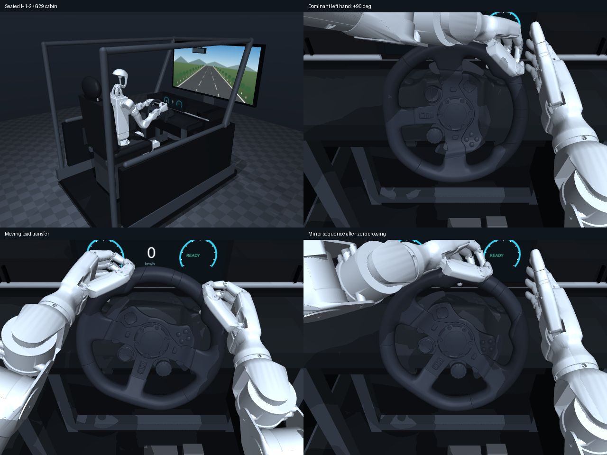
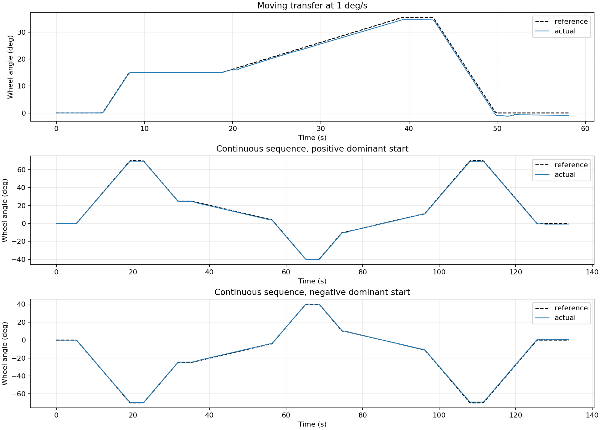
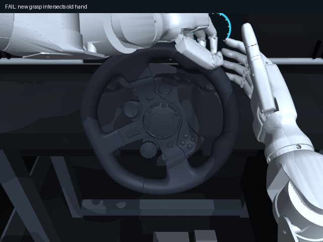

双向90°：右转
通过 · 运动RMSE 0.586° · 原始评价
2026-11-07 · H1-2坐姿上半身 / Inspire双手 / Logitech G29驾驶室
完整报告与复现命令 · 逐例数值 · 全部探索与失败 · 后续实物标定

0→+70→+25→−40→+70→0及其镜像；交接中参考继续前进，不重置物理状态。两方向运动RMSE约0.38°和0.37°。本页视频按原时长播放，完整保存保持、交接和回正。

通过 · 运动RMSE 0.586° · 原始评价
通过 · 运动RMSE 0.429° · 原始评价
通过 · 运动RMSE 0.209° · 原始评价
通过 · 运动RMSE 0.226° · 原始评价
通过 · 运动RMSE 0.612° · 原始评价
通过 · 运动RMSE 0.446° · 原始评价
通过 · 运动RMSE 0.380° · 原始评价
通过 · 运动RMSE 0.367° · 原始评价
失败，保留作诊断 · 运动RMSE 0.362° · 原始评价
正向与镜像分别在108.896秒和108.892秒停止；接收手的中指与原支撑手拇指发生碰撞。未通过的前缀不会计入完整成功。

原始状态500 Hz，几何间隙50 Hz；所有数值来自轨迹，视频只用于查看。负载是未标定合成模型，拟人性尚待人类示范量化。